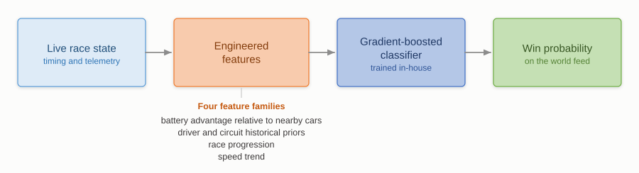

Applied machine learning · Live systems
Live win prediction for the Formula E world feed
The championship's win-probability graphic came from an external model that called the winner correctly less than half the time at the point in the race where it was being shown. We rebuilt it in-house.

The challenge
Formula E is difficult to predict because the format is designed to keep the field close. Energy management means the car leading on lap 20 isn't necessarily the car that can still win on lap 30. Attack Mode reshuffles the order deliberately. Safety cars compress the field and wipe out any advantage built up over a stint. A model that leans on track position ends up wrong at the moments the broadcast wants to use it.
The external model was making that mistake. At below fifty per cent accuracy, at the point in the race where the graphic gets used, it wasn't worth putting on screen.
The approach
Most of the work was in the features rather than the model. Track position on its own says little here. What decides the race is position relative to the energy available to hold it, so the feature set is built around relative state rather than absolute position. Four families do the work: battery advantage relative to the cars nearby, historical priors for the driver and the circuit, how far through the race we are, and speed trend as a read on whether a car is managing or pushing.
On top of those sits a gradient-boosted classifier. Boosted trees suit this problem: the feature interactions matter, the data isn't large, and the model has to produce a calibrated probability under a live latency budget, rather than a label after the fact. Being able to see which features drive a given call matters too, since a commentator may repeat the number on air.
The result
At sixty per cent race distance the model calls the winner correctly 63 per cent of the time, against under fifty for the version it replaced. It runs live during races and its output is broadcast globally on the world feed.
← All projects